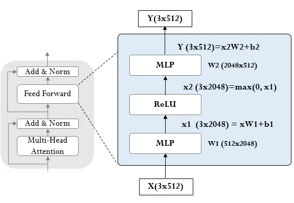
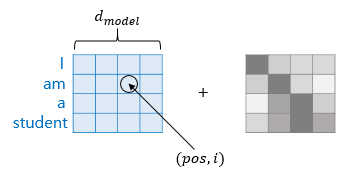
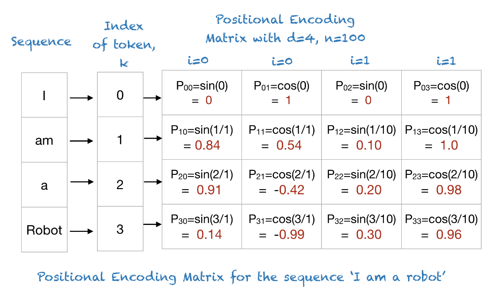

[논문 리뷰] Attention Is All You Need[3]: Feed-Forward, Positional Encoding
자연어 분야의 핵심 논문 중 하나인 Attention Is All You Need을 리뷰한다. 어텐션 알고리즘과 모델 아키택처를 그림과 코드를 통해 이해하고, 병렬성 관점에서 살펴본다.
#NLP#Paper
Position-wise Feed-Forward Networks

- 두 개의 선형 변환 사이에 ReLU 활성화 함수 사용
- 모든 위치에 동일하게 적용되지만 레이어마다 다른 파라미터 사용
- 입출력 차원 512, 내부 차원 2048
Positional Encoding
$$
PE(pos, 2i) = \sin\left(\frac{pos}{10000^{\frac{2i}{d_{model}}}}\right)
$$
$$ PE(pos, 2i+1) = \cos\left(\frac{pos}{10000^{\frac{2i}{d_{model}}}}\right) $$


- 순환 및 컨볼루션 없이 시퀀스 내 토큰 위치 정보를 추가해야 함
- 인코더와 디코더의 입력 임베딩에 위치 인코딩을 더함
- sine, cosine 함수의 서로 다른 주기를 가진 위치 인코딩 사용
- 학습된 위치 임베딩 대신 사인/코사인 함수를 사용한 이유는 더 긴 시퀀스에 대한 일반화 가능성 때문